ESPACIO RAÍZ
A satellite facility for the Scala Naturae Hotel, housed within a 600 m² industrial warehouse. The project includes workshops for organic products derived from local species, an interactive visitor center, showrooms, and tasting areas featuring products sold and used by the hotel. Visitor interaction is tailored to the characteristics of each species: aromatic (smell), edible (taste), and textile (touch). To support this concept, the historic Bourbon orchards are restored and cultivated, providing raw materials for production while simultaneously fostering local tourism.
 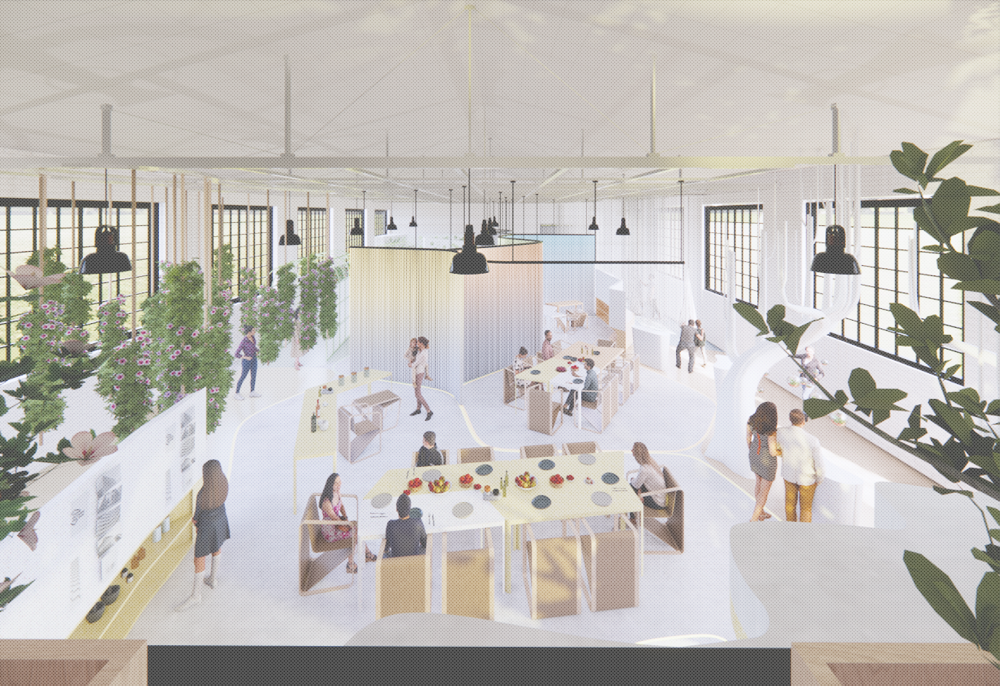
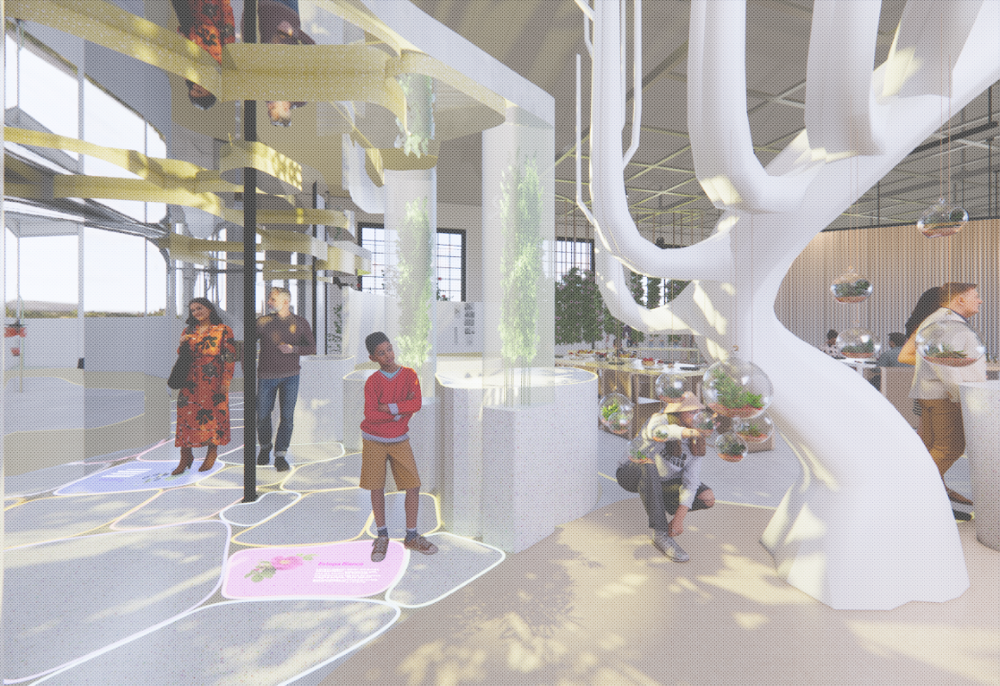
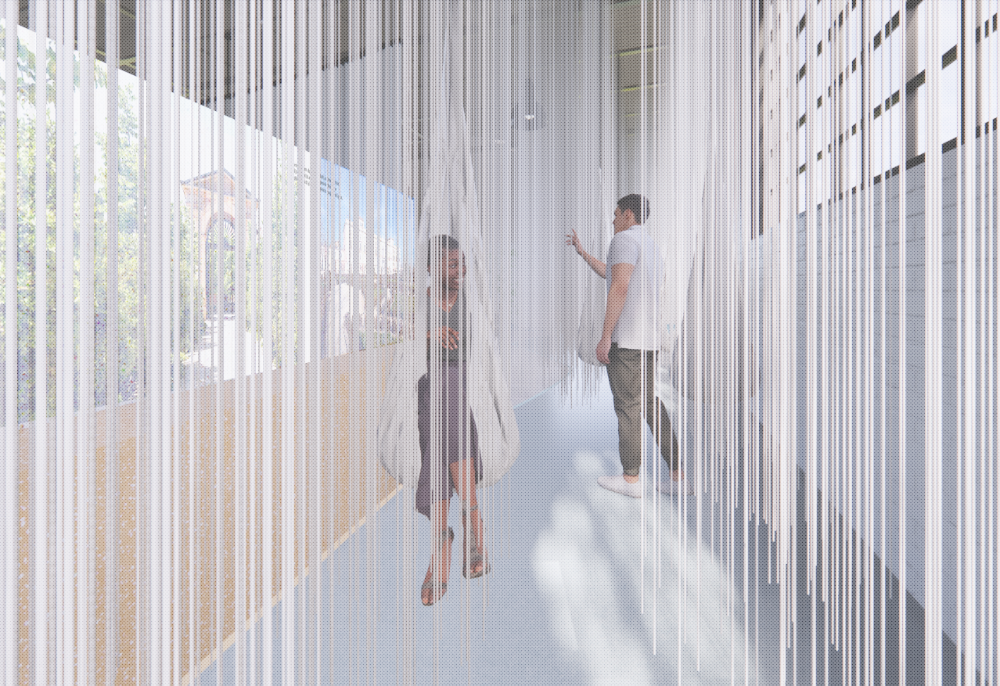
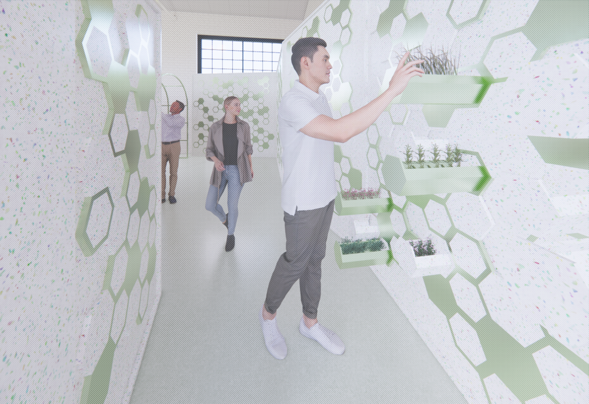
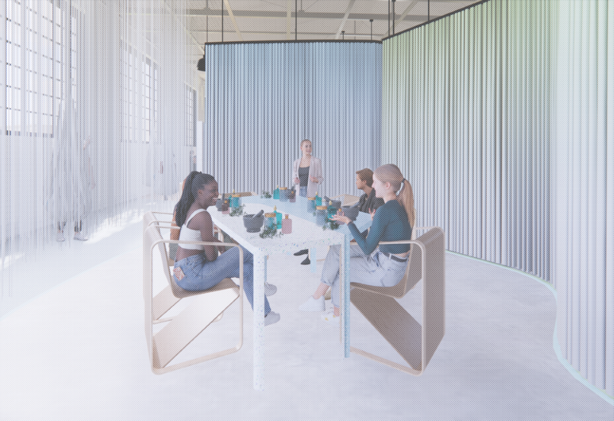
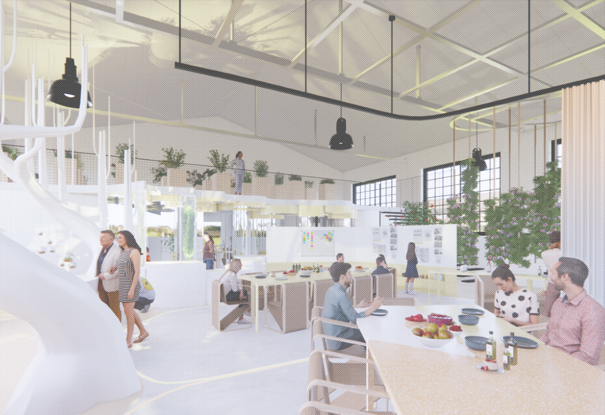
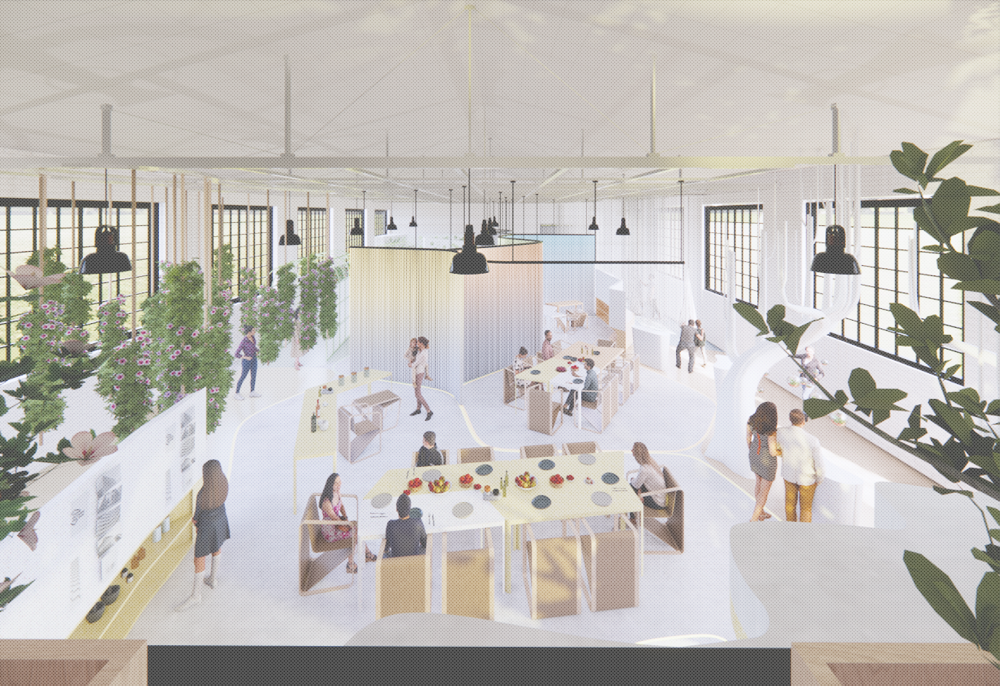
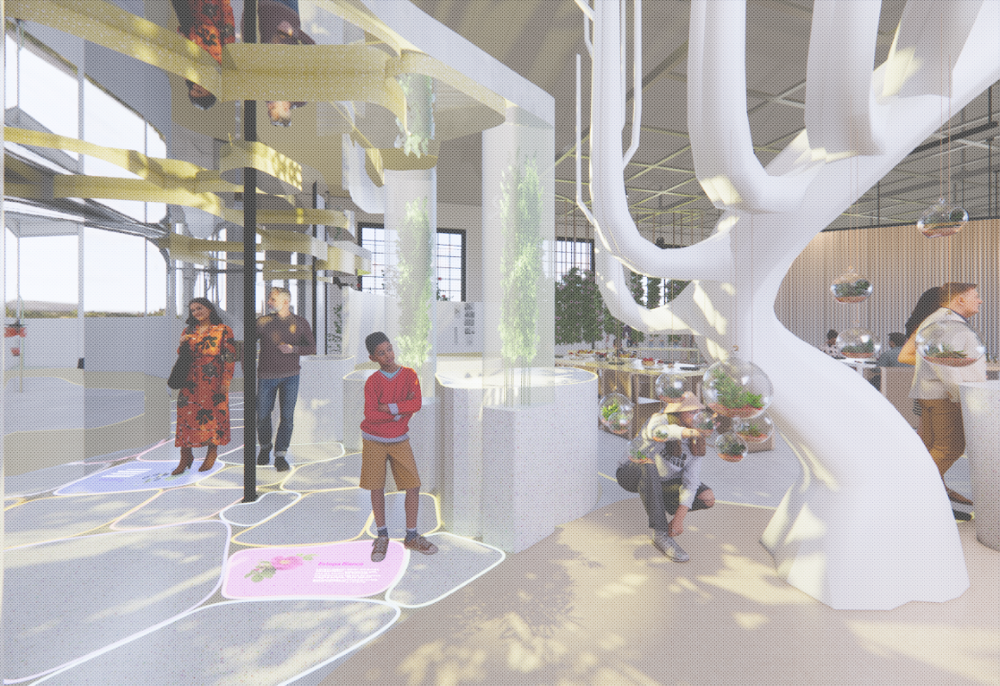
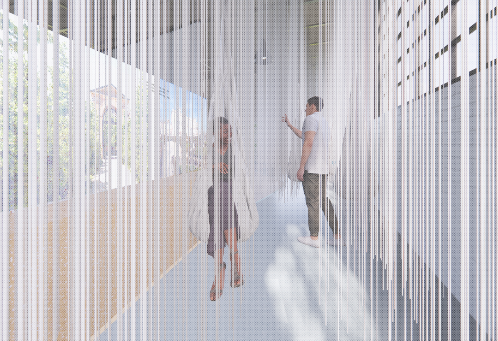
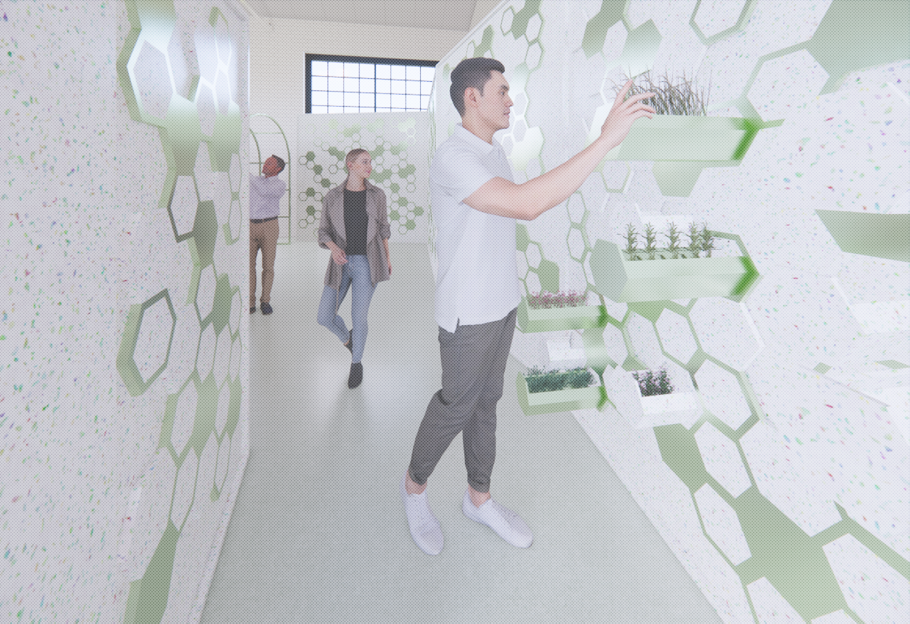
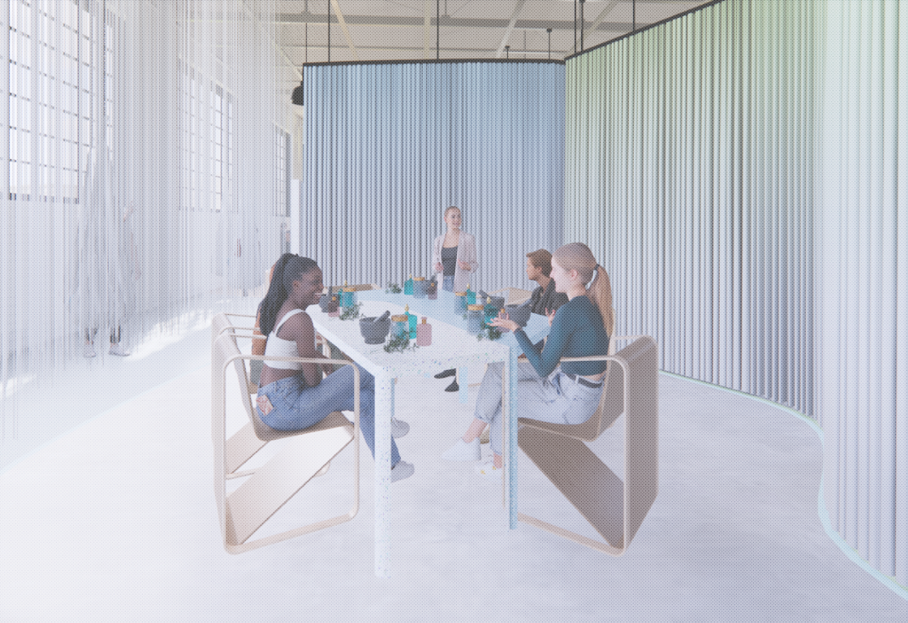
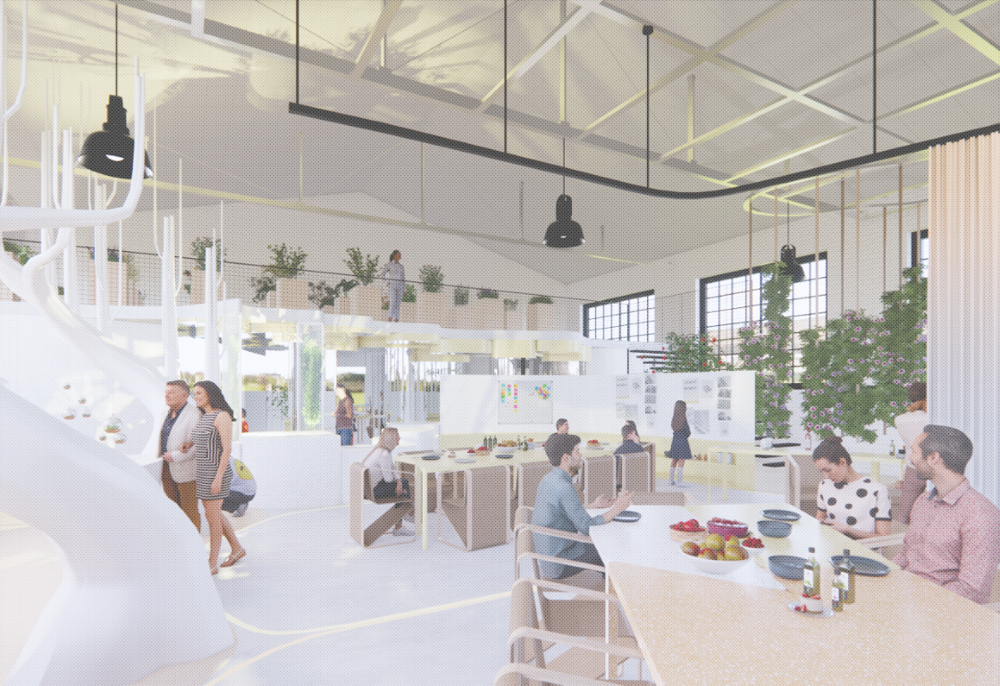